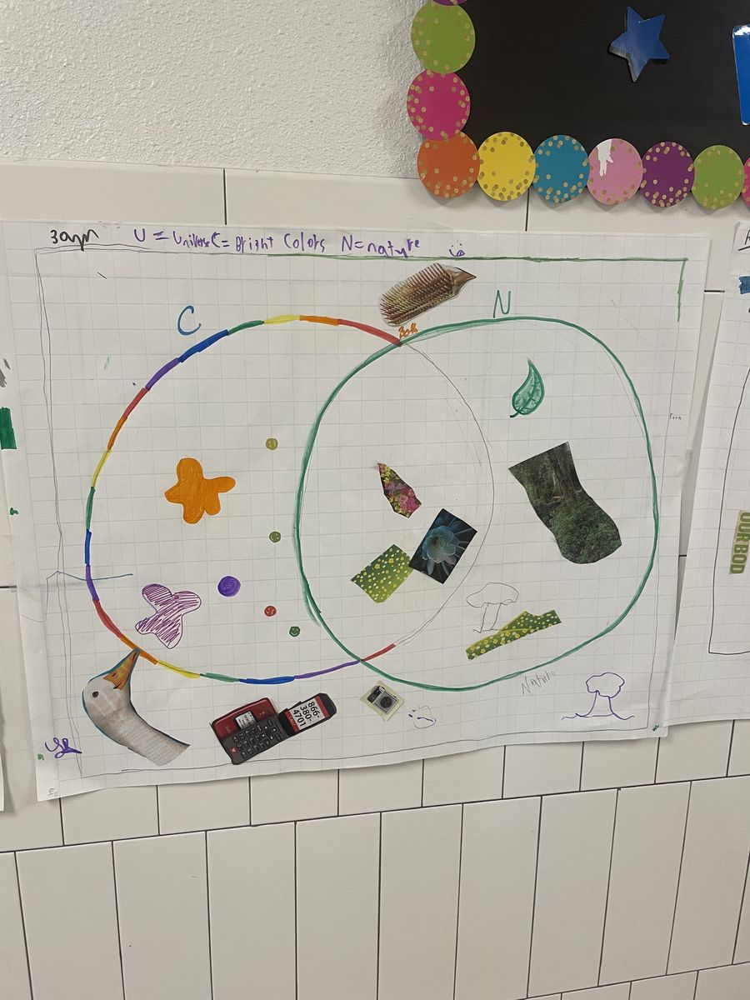
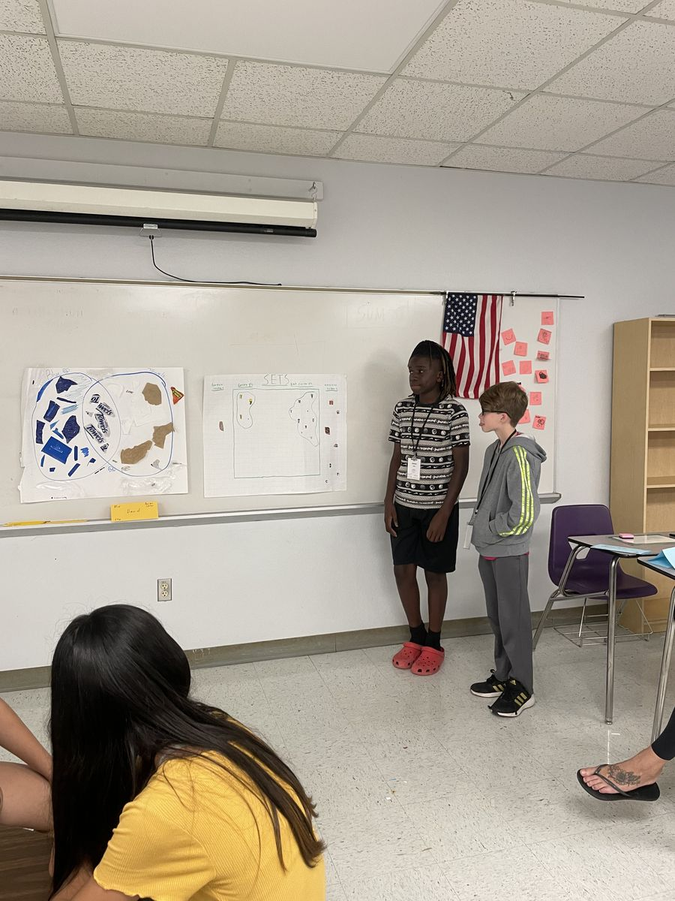
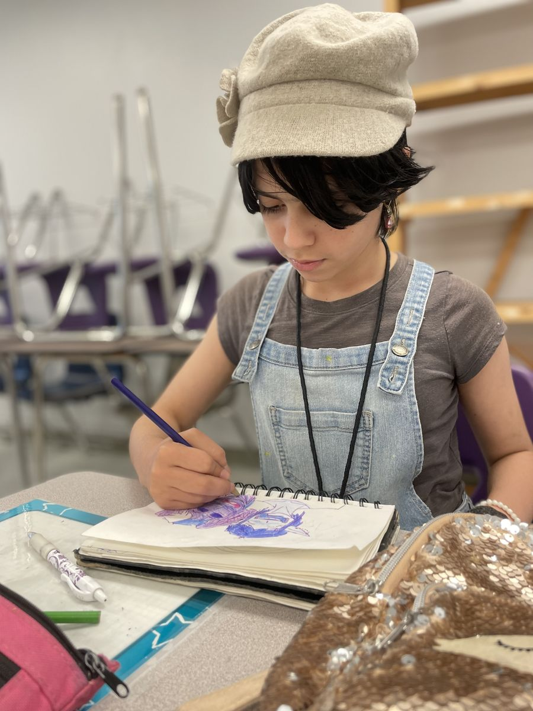
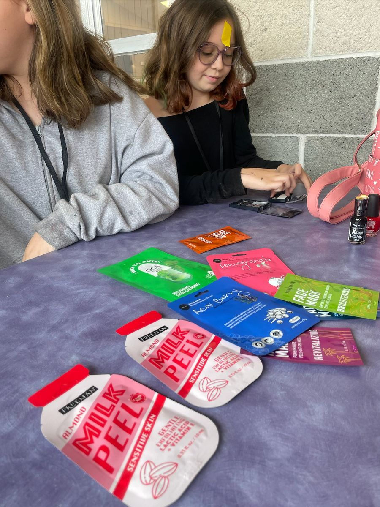
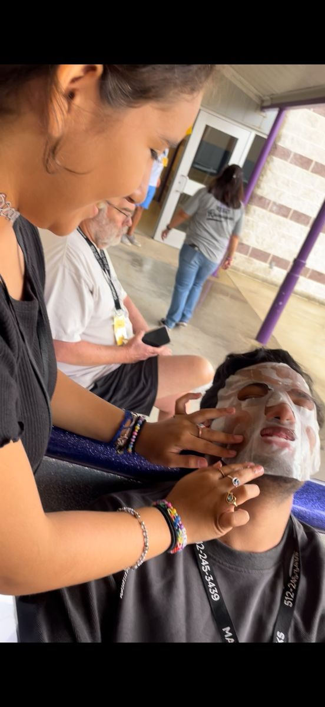
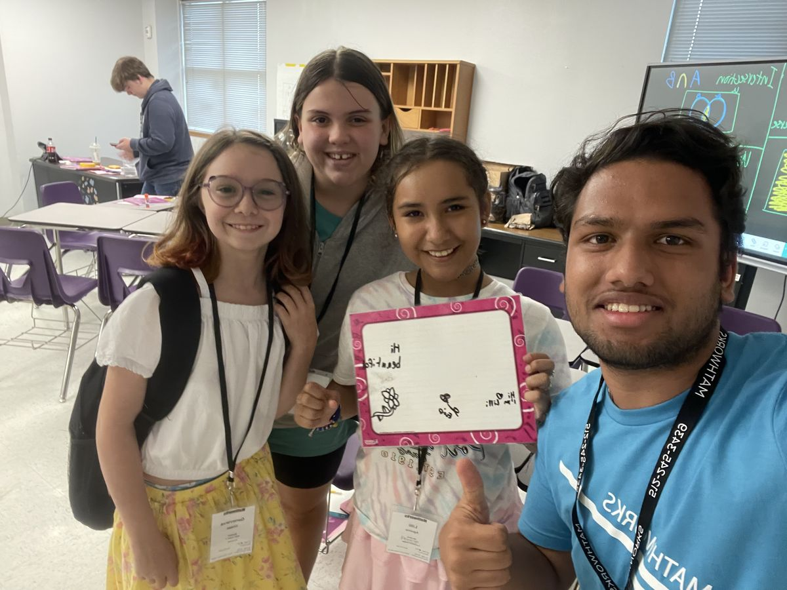

The first thing I noticed was how they handled Ezekiel.
He sat in the back with his hoodie pulled over his face, and no one forced him to move. No one raised their voice or threatened consequences. The instructors tried, quietly, and when he didn't respond, they let him be. I sat with that for a while. The patience of it. In the place I grew up, a student like Ezekiel would have been scolded out of his seat or sent to stand in a corner. I had been that student once, distracted by something I could not name, and I still remember the particular shame of being made an example. Here, the room simply continued around him.
Over two weeks, I watched this principle repeat itself in different forms. Patience was not a policy at the camp. It was a practice, one that shaped the way students encountered mathematics, each other, and the adults around them. What I observed in those two weeks changed the way I think about teaching, about learning, and about the kind of attention that allows a young person to arrive at understanding on their own schedule rather than someone else's.
Mathematics, it turns out, is full of language traps. The students kept reading A ∪ B as "A universe B," confusing the union symbol with the abbreviation for universal set. To an adult with training, this is an error. To me, watching it happen in real time, it was something more interesting: a reasonable inference from available information. The symbols looked identical to someone encountering them for the first time, so they reached for the only word they knew that fit. What they were doing was not failing to understand. They were applying a logic that simply needed one correction, one small adjustment, to become exactly right.

I noticed this pattern across the classroom. Lily began drawing probability trees before Dr. Rebekah had finished explaining them, arriving at the structure independently, following an intuition she could not yet name. Evie derived 2ⁿ on her own, announcing it quietly, as though she was not sure it counted. Fern worked through the four fours problem with careful persistence, and called Cooper over only when she was finished, not when she was stuck. Payton corrected everyone else's Venn diagrams with confidence, having made the same mistake herself. But she understood the architecture of the concept. She knew where things were supposed to go.

What struck me was that the students who appeared to be struggling were often the ones engaging most deeply. They were not behind. They were building something, just not yet in the language the problem required. This distinction, between a student who has not arrived and a student who is arriving slowly, seems to me one of the most important things a teacher can learn to recognize.
Trust, like understanding, cannot be rushed. I learned this from Fern.
On the first day, when Dr. Rebekah complimented her dress, Fern's entire posture communicated a single, clear message: you have not been invited here. She was not rude. She simply had a boundary, and she enforced it without apology. I respected it without telling her I respected it, because naming it would have been another form of intrusion.
Over the following days I sat near her and asked small questions. Not about her work, which she had already refused to discuss, but about the things she cared about. Her four brothers. The one plant in her room that was easy to keep alive. The unmaintained backyard her father had never gotten around to fixing, which she had turned, somehow, into a good thing, a wild space that belonged to her precisely because no one else had claimed it. She told me about a plant she got for a dollar that flips its leaves when it needs water. She described it the way someone describes something they find genuinely miraculous.

By the fourth day she was wearing a hat that reminded me of a Renaissance portrait, something an artist would wear while seated at a canvas in soft, angled light. I told her, carefully, that it was a nice hat. She smiled. I said it reminded me of the Renaissance. She smiled again. And then, without prompting, she turned her diary toward me and showed me what she had been drawing: two elf brothers, 107 years old, living in a world where elves only became adults at 100 and could rename themselves whenever they chose. I asked why. She said, just because I feel like it. It struck me as one of the most honest answers I had heard from anyone that summer.
I looked up her name afterward. The first urban dictionary entry for Fern read: a person who loves drawing. She read the whole definition to the end. What I took from this experience was not a technique or a strategy. It was a principle. The way to reach a guarded child is not to knock on the front door harder. It is to walk around the house slowly, noticing what they have planted in the yard, until they decide to let you in through a side entrance of their own choosing.
One of the things I did not expect to learn at a mathematics camp was that nail art requires a kind of patience that is structurally identical to the patience required by a proof.

During a lunch break in the second week, three of the girls, Lily, Evie, and Payton, invited me into what I can only describe as a small, precise ritual. Lily had brought seven face masks from home. Payton timed each application with an exactness I found genuinely moving: you started at 10:43, she said, so you cannot take it off until 11:03. The brush had to be dipped after every stroke. The nail could not be touched for eight or nine minutes after. Nothing could be rushed. Each step had a required duration, and the result depended entirely on whether you respected it.

Payton told me she liked how chill I was about all of it. Her father and brother, she said, would never have allowed her to do this to them. Evie added that boys their age would just call it cringe. I thought about that for a moment, about what it costs a twelve-year-old girl to share something she cares about with an adult who might dismiss it, and how rarely that cost is acknowledged.
During this same session, Lily mentioned, in the easy way that children sometimes move between the ordinary and the enormous, that she lived with adopted parents. She said it as a fact, not as a confession. I did not respond immediately. When we continued, we continued. But I carried that sentence with me for the rest of the camp, because it taught me something I had not considered: that for some children, the willingness to share a small, unguarded detail is itself an act of extraordinary trust, and the correct response is not to make it larger than they made it, but to receive it at exactly the size they offered it.

On the last day before the break, the cafeteria served cheese sticks, milk, and strawberries.
I have a memory connected to strawberries that I did not expect to surface at a mathematics camp in Texas, but it did, and I think it belongs in this reflection because it is, in its way, about the same thing everything else here is about.
I grew up in Nepal with a boy named Kalyann. He was not my brother by blood but he was my brother by everything else, the kind of friend who appears so early in your life that you cannot remember a version of yourself that does not include him. We shared the small, daily things that childhood is made of. One year, on the little balcony where my mother kept her plants, he and I planted a strawberry in a vase. We did not know what we were doing. We watered it and waited.
After a few months, something grew. The first strawberry was small and reddish-pink and we could not believe it. I called for Kalyann and he came running. After that, whenever a new one appeared, whoever found it first would call for the other. We shared every one. If one of us was not home, the other waited.
We have not spoken in a long time. There was no argument, no event I can point to. Just the slow, quiet divergence that happens when two people grow in different directions and one day realize that the distance between them has become the defining fact of the relationship rather than the closeness. I do not know what he is doing now. I know that I still think of him when I see strawberries, and I expect I always will.
I thought about Kalyann while sitting at that lunch table, watching twelve-year-olds navigate the small, enormous business of being young. Waiting for the face mask to set. Waiting for the symbols on the board to resolve into something they recognized. Waiting for someone to stay long enough that they could trust him with a diary or a drawing or a fact about their life that they had not planned to share.
Patience, I have come to believe, is not passive. It is the act of remaining present while something takes the time it needs. The best mathematics I saw those two weeks was not produced by the fastest students. It was produced by the ones who were given enough room to arrive at their own pace. The deepest trust I earned was not won through effort or charm. It was won by staying, by not leaving before the thing I was waiting for was ready.
Some things grow that way. Small, a little crooked, and worth every minute of the wait.